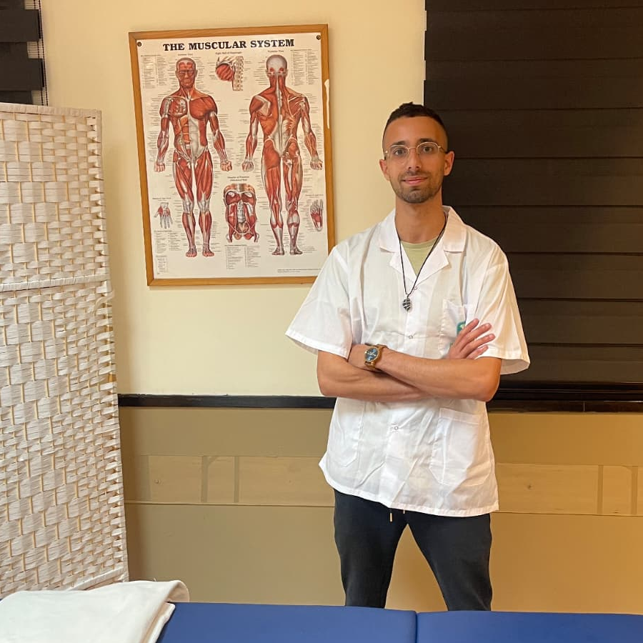

הגישה שלי

שלום, שמי אופק
כמטפל ברפואה סינית ורפואה משלימה, אני מאמין ביכולת הטבעית של הגוף לרפא את עצמו. בקליניקה שלי בהרצליה אני משלב ידע עתיק יומין עם הבנה מעמיקה של הצרכים המודרניים.
הטיפול מתמקד בשורש הבעיה ולא רק בסימפטומים, תוך שימוש בדיקור סיני, צמחי מרפא, כוסות רוח, טיפולי מגע (טווינא) והנחיות תזונה מותאמות אישית. המטרה שלי היא לעזור לך להחזיר את האיזון לחייך ולהרגיש במיטבך.
סוגי טיפולים
דיקור סיני (Acupuncture)
שימוש במחטים חד-פעמיות ודקות במיוחד לאיזון זרימת הצ'י (אנרגיית החיים) בגוף. הדיקור מסייע בהקלה על כאבים כרוניים וחדים, שיפור העיכול, הפחתת מתחים ולחצים, ושיקום איכות השינה.
צמחי מרפא
פורמולות צמחים המותאמות אישית לכל מטופל לאחר אבחון מקיף. הצמחים מסייעים בחיזוק המערכת החיסונית, תמיכה בתפקוד האיברים הפנימיים וטיפול במגוון רחב של סימפטומים. כל הצמחים מאושרים על ידי משרד הבריאות.
טווינא וכוסות רוח
טיפולי מגע טיפוליים בשילוב כוסות רוח מסורתיות לשחרור שרירים תפוסים, שיפור זרימת הדם, הפגת מתחים ותמיכה בטיפולי הדיקור. שיטות אלו מותאמות לצרכי המטופל ומשלימות את תהליך הריפוי.
שאלות נפוצות
דיקור סיני עושה שימוש במחטים חד-פעמיות ודקות במיוחד (בעובי שערה). הדיקור אינו כואב — לרוב מרגישים עקצוץ קל או תחושת זרימה נעימה התורמת לרגיעה עמוקה.
הרפואה הסינית יעילה למגוון רחב של מצבים: כאבי גב ומפרקים, בעיות עיכול, מיגרנות, הפרעות שינה, מתח נפשי וחרדה, וחיזוק כללי של מערכת החיסון.
מפגש ראשון כולל אבחון מקיף (תשאול, אבחנת דופק ולשון) ונמשך כשעה ורבע. מפגשי המשך נמשכים כ-45 עד 60 דקות.
כן. פורמולות צמחי המרפא מותאמות אישית לאחר אבחון קפדני. הצמחים מאושרים על ידי משרד הבריאות ומיוצרים תחת תקני איכות מחמירים (GMP).
בואו נדבר
לתיאום תור וייעוץ אישי, מוזמנים ליצור קשר ישירות ב-WhatsApp:
שליחת הודעה ב-WhatsApp 💬